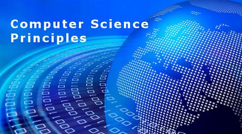
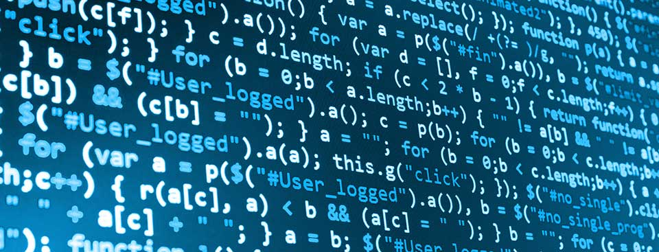

Originally AP Computer Science Principles, APCSP, wasn't on my schedule for senior year. In fact, I was planning to take AP Biology to gain insight on how my future career would be like. However, since I already took AP Physics as a junior, over summer'19 I realized that I wanted to take an AP class that I don't know much about; I wanted to try something different for my senior year! This in turn lead me to changing my schedule from AP Bio to APCS! Furthermore, in this class I hope to learn basic coding skills, along with other lessons on how to create video games, preofessional websites, and see how computer principles apply towards our daily lives. Additiionally I hope to get an A for the course through working diligently!
 Courtesy of Columbus Noth High, bcsc.edu